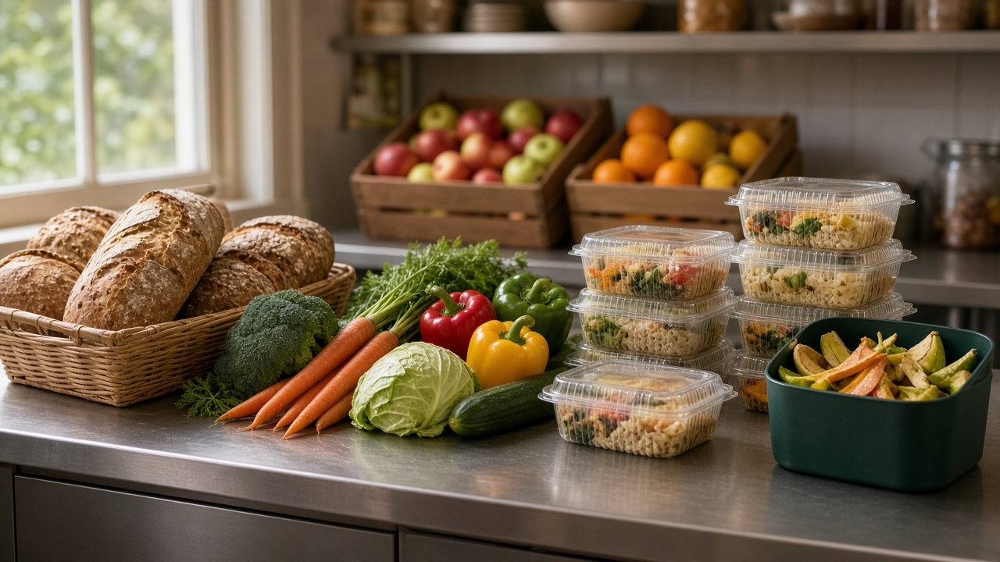
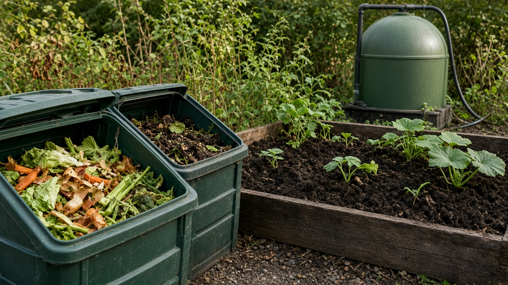
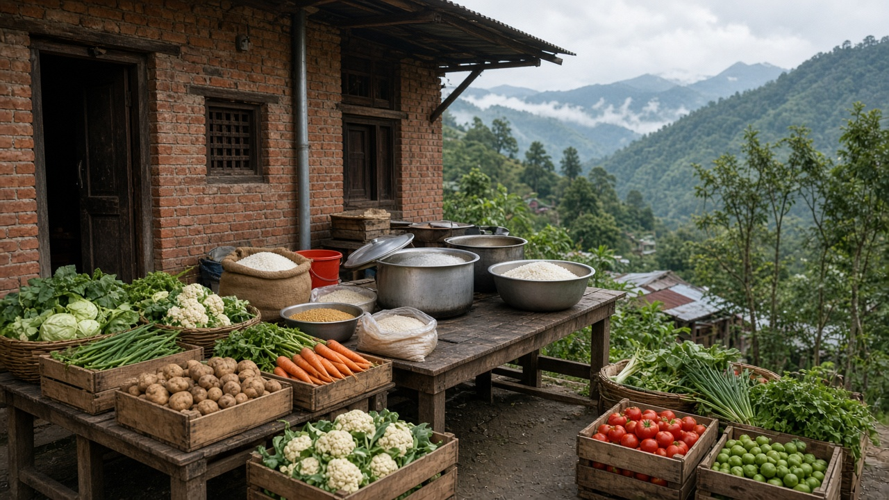

Food Waste Reduction and Recovery
Published on August 19, 2026

Food waste reduction and recovery address the staggering amount of edible and inedible organic material lost across farms, markets, restaurants, households, and institutions. Globally, roughly one-third of food produced for human consumption is wasted, squandering water, land, energy, and labor while contributing to greenhouse-gas emissions when organic matter decomposes in landfills without oxygen. Prevention strategies include better harvest planning, improved cold-chain storage, clearer date labeling, portion control in catering, and consumer education on meal planning and proper refrigeration. Recovering surplus food through food banks and community kitchens redirects safe meals to people facing hunger.
Where prevention is not possible, valorization pathways transform unavoidable scraps into valuable products. Industrial anaerobic digesters produce biogas and digestate fertilizer; composting facilities create soil amendments for agriculture and landscaping; and insect farming converts organic residues into animal feed protein. Retailers and hotels increasingly partner with logistics firms to collect unsold bread, produce, and prepared dishes before they spoil. Technology platforms connect donors with charities in real time, reducing administrative barriers and ensuring food safety through temperature monitoring and standardized handling protocols.
National and local policies set food-waste reduction targets aligned with Sustainable Development Goal 12.3, tax incentives for donations, and landfill surcharges on organic waste to encourage separation and processing. Households contribute by using leftovers creatively, freezing excess produce, and separating organics for municipal compost programs. Reducing food waste strengthens food security, lowers disposal costs for cities, and cuts methane emissions—a potent short-lived climate pollutant. By treating food as a precious resource rather than disposable trash, societies move closer to circular, resilient food systems that respect both people and the planet.

खाद्य फोहोर घटाउने र पुन: प्राप्तिले खेत, बजार, रेस्टुरेन्ट, घर र संस्थाहरूमा गुमाइने खाने योग्य र नखाने योग्य जैविक सामग्रीको विशाल मात्रालाई सम्बोधन गर्छ। विश्वभर मानव उपभोगका लागि उत्पादन भएको खानाको लगभग एक-तिहाइ फालिन्छ, जसले पानी, जमिन, ऊर्जा र श्रम बर्बाद गर्छ, र अक्सिजन बिना ल्यान्डफिलमा सड्दा ग्रीनहाउस ग्यास उत्सर्जन बढाउँछ। रोकथाम रणनीतिहरूमा राम्रो बाली योजना, सुधारिएको शीत-श्रृंखला भण्डारण, स्पष्ट मिति लेबल, भोज सेवामा मात्रा नियन्त्रण र भोज योजना र शीत भण्डारण बारे उपभोक्ता शिक्षा समावेश छ। अतिरिक्त खाना खाद्य बैंक र सामुदायिक भान्छाघर मार्फत पुन: प्राप्त गरेर सुरक्षित भोजन भूखा लागेका मानिसहरूलाई पठाइन्छ।
रोकथाम सम्भव नभएमा, टाल्न नसकिने अवशेषलाई मूल्यवान उत्पादनमा रूपान्तरण गर्ने मार्गहरू छन्। औद्योगिक अवायवीय पचकले जैवग्यास र पचक मल उत्पादन गर्छ; कम्पोस्टिङ सुविधाले कृषि र भू-सजावटका लागि माटो सुधार सामग्री बनाउँछ; र कीट पालनले जैविक अवशेषलाई पशु आहार प्रोटीनमा बदल्छ। खुद्रा व्यापारी र होटेलले ढुवान कम्पनीसँग बिक्री नभएको रोटी, तरकारी र तयार परिकार बिग्रनु अघि सङ्कलन गर्न साझेदारी बढाउँछ। प्रविधि प्लेटफर्मले तत्कालमा दाता र धर्मार्थ संस्था जोड्छ, प्रशासनिक बाधा घटाउँछ र तापक्रम निगरानी र मापदण्डित ह्यान्डलिङ मार्फत खाद्य सुरक्षा सुनिश्चित गर्छ।
राष्ट्रिय र स्थानीय नीतिले दिगो विकास लक्ष्य १२.३ सँग मेल खाने खाद्य फोहोर घटाउने लक्ष्य, दानका लागि कर प्रोत्साहन र जैविक फोहोर ल्यान्डफिलमा हाल्दा अतिरिक्त शुल्क लगाएर छुट्याउने र प्रशोधन प्रोत्साहित गर्छ। घरपरिवार बाँकी खाना रचनात्मक प्रयोग, अतिरिक्त तरकारी फ्रिजमा राख्ने र नगरपालिका कम्पोस्ट कार्यक्रमका लागि जैविक छुट्याउने योगदान दिन्छ। खाद्य फोहोर घटाउँदा खाद्य सुरक्षा बलियो हुन्छ, शहरको निपटान लागत घट्छ र मिथेन उत्सर्जन काटिन्छ—छोटो जीवनकालको शक्तिशाली जलवायु प्रदूषक। खानालाई एक पटक प्रयोग फाल्ने फोहोर होइन बहुमूल्य स्रोतका रूपमा हेर्दा, समाज परिपत्र, लचिलो खाद्य प्रणालीतर्फ अघि बढ्छ जसले मानिस र पृथिवी दुवैको सम्मान गर्छ।

खाद्य अपशिष्ट कमी और पुन: प्राप्ति खेत, बाज़ार, रेस्टुरेन्ट, घरों और संस्थानों में खोए जाने वाले खाने योग्य और अखाद्य जैविक पदार्थ की विशाल मात्रा को संबोधित करती है। विश्व स्तर पर मानव उपभोग के लिए उत्पादित भोजन का लगभग एक-तिहाई बर्बाद होता है, जिससे पानी, भूमि, ऊर्जा और श्रम व्यर्थ जाता है, और बिना ऑक्सीजन के लैंडफिल में सड़ने पर ग्रीनहाउस गैस उत्सर्जन बढ़ता है। रोकथाम रणनीतियों में बेहतर फसल योजना, सुधारित शीत-श्रृंखला भंडारण, स्पष्ट तिथि लेबल, भोज सेवा में मात्रा नियंत्रण, और भोज योजना व शीत भंडारण पर उपभोक्ता शिक्षा शामिल है। अतिरिक्त भोजन खाद्य बैंक और सामुदायिक रसोई के माध्यम से पुन: प्राप्त कर सुरक्षित भोजन भूखे लोगों तक पहुँचाया जाता है।
जहाँ रोकथाम संभव नहीं, वहाँ टाले न जा सकने वाले अवशेषों को मूल्यवान उत्पादों में बदलने के मार्ग हैं। औद्योगिक अवायवीय पाचक जैवगैस और डाइजेस्टेट उर्वरक उत्पादन करते हैं; खाद बनाने की सुविधाएँ कृषि और भू-सजावट के लिए मिट्टी सुधार सामग्री बनाती हैं; और कीट पालन जैविक अवशेष को पशु आहार प्रोटीन में बदलता है। खुदरा विक्रेता और होटल परिवहन कम्पनी के साथ बिक्री न हुई रोटी, सब्ज़ियाँ और तैयार व्यंजन खराब होने से पहले एकत्र करने की साझेदारी बढ़ा रहे हैं। प्रौद्योगिक प्लेटफ़ॉर्म वास्तविक समय में दाता और धर्मार्थ संस्थाओं को जोड़ते हैं, प्रशासनिक बाधाएँ घटाते हैं और तापमान निगरानी व मानकीकृत हस्तांतरण मापदंड से खाद्य सुरक्षा सुनिश्चित करते हैं।
राष्ट्रीय और स्थानीय नीतियाँ दिगो विकास लक्ष्य १२.३ के अनुरूप खाद्य अपशिष्ट कमी के लक्ष्य, दान के लिए कर प्रोत्साहन, और जैविक अपशिष्ट लैंडफिल में डालने पर अतिरिक्त शुल्क लगाकर अलग करने और प्रसंस्करण को प्रोत्साहित करती हैं। घरपरिवार बचे भोजन का रचनात्मक उपयोग, अतिरिक्त सब्ज़ियाँ फ्रीज़ में रखना, और नगरपालिका खाद कार्यक्रम के लिए जैविक अलग करने में योगदान देते हैं। खाद्य अपशिष्ट कम करने से खाद्य सुरक्षा मजबूत होती है, शहरों की निपटान लागत घटती है, और मीथेन उत्सर्जन कटता है—छोटी अवधि का शक्तिशाली जलवायु प्रदूषक। भोजन को एक बार प्रयोग वाले कचरे के बजाय बहुमूल्य संसाधन मानकर, समाज चक्रीय, लचीली खाद्य प्रणाली की और बढ़ता है जो लोगों और पृथ्वी दोनों का सम्मान करता है।